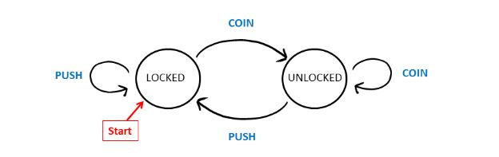

Computation - Any type of calculation that follows steps that provide a solution to a problem.
4 Major Families of Automata
Grammar - A set of rules for generating strings.
A deterministic finite state machine is a machine who's outcomes are predetermined and
dependent on the input.
For example, a subway turnstile. It starts locked, and accepts either a push or a coin. If it
gets a coin, it unlocks (and therefore can be pushed).
If it's pushed while unlocked, it turns then locks.
DFA components: Alphabet - The finite amount of input strings.
Transistion Function - The set of rules that determine the output. Based on
current state and next input string.
Start State - The state of which processing strings begins.
(Below is a visualization of the DFA state)

A table can be used to represent the transition between states.
The columns will be the input, the rows being the current state.
The cells will be the output (given the current state and input)
| COIN | PUSH | |
|---|---|---|
| LOCKED | UNLOCKED | LOCKED |
| UNLOCKED | UNLOCKED | LOCKED |
(Examples & exercises of the three sections above)
Some finite state machines can have "accepting" values, meaning that the output is
"true" if it ends in a certain state.
On a diagram, this is represented by a double circle around the state.